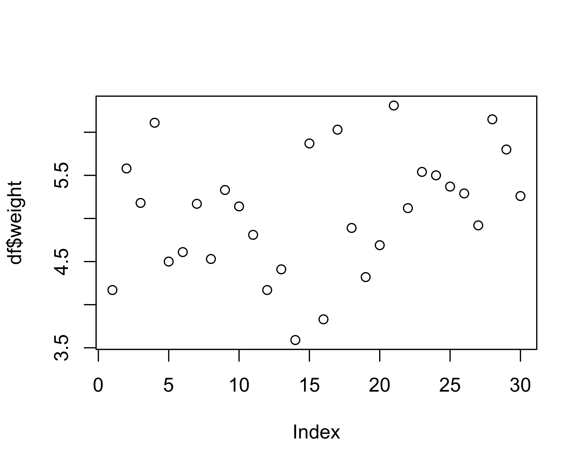
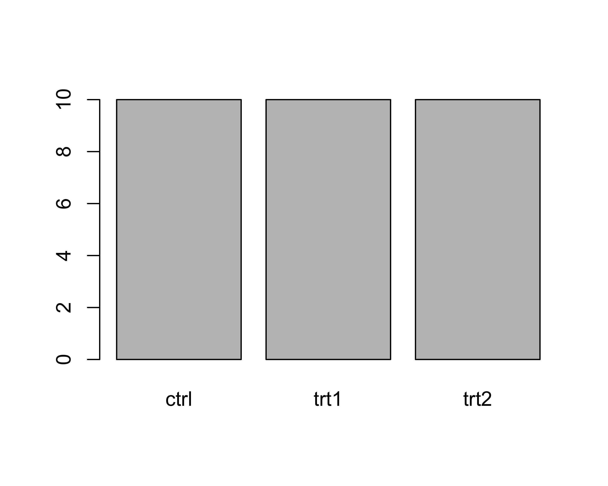
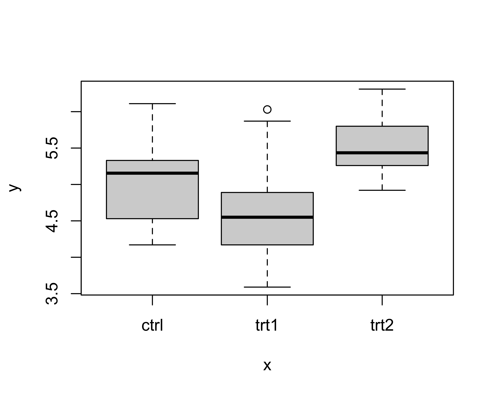

install.packages("tidyverse")
# or
pacman::p_load("tidyverse")The tidyverse
Content summary
Pipe (%>%), Tibbles, dplyr-verbs, long/wide format and more.
When using R, you will sooner or later hear about the {tidyverse}. The tidyverse is a collection of R packages that “share an underlying design philosophy, grammar, and data structures” of tidy data. The individual tidyverse packages comprise some of the most downloaded R packages.
Install the complete tidyverse with:
| ggplot2 | dplyr | tibble | forcats | stringr |
|---|---|---|---|---|
 |
 |
 |
 |
 |
I did not use the tidyverse packages in my first years using R, but I wish I did. While you can often reach your goal with or without using the tidyverse packages, I personally prefer using them. Thus, they are used extensively throughout the chapters of this website.
During the next sections I will try to explain how to use some of these packages and sometimes compare them to the Base R (= non-tidyverse) alternative.
Additional Resources
- “R for Data Science” (Wickham and Grolemund 2017), which is a book that can be read online for free and was written by the package authors themselves.
Tables
Finally, we can now talk about data tables with rows and columns. In R, I like to think of a table as multiple vectors side by side, so that each column is a vector.
data.frame
Base R has a standard format for data tables called data.frame. Here is an example table that is an R built-in, just like pi is - it is called PlantGrowth:
PlantGrowth weight group
1 4.17 ctrl
2 5.58 ctrl
3 5.18 ctrl
4 6.11 ctrl
5 4.50 ctrl
6 4.61 ctrl
7 5.17 ctrl
8 4.53 ctrl
9 5.33 ctrl
10 5.14 ctrl
11 4.81 trt1
12 4.17 trt1
13 4.41 trt1
14 3.59 trt1
15 5.87 trt1
16 3.83 trt1
17 6.03 trt1
18 4.89 trt1
19 4.32 trt1
20 4.69 trt1
21 6.31 trt2
22 5.12 trt2
23 5.54 trt2
24 5.50 trt2
25 5.37 trt2
26 5.29 trt2
27 4.92 trt2
28 6.15 trt2
29 5.80 trt2
30 5.26 trt2Let us create a copy of this table called df (dataframe) and then use some helpful functions to get a first impression of this data:
df <- PlantGrowth
str(df)'data.frame': 30 obs. of 2 variables:
$ weight: num 4.17 5.58 5.18 6.11 4.5 4.61 5.17 4.53 5.33 5.14 ...
$ group : Factor w/ 3 levels "ctrl","trt1",..: 1 1 1 1 1 1 1 1 1 1 ...summary(df) weight group
Min. :3.590 ctrl:10
1st Qu.:4.550 trt1:10
Median :5.155 trt2:10
Mean :5.073
3rd Qu.:5.530
Max. :6.310 We can see that this dataset has 30 observations (=rows) and 2 variables (=columns) and is of the type “data.frame”. Furthermore, the first variable is called weight and contains numeric values for which we get some measures of central tendency like the minimum, maximum, mean and median. The second variable is called group and is of the type factor containing a total of three different levels, which each appear 10 times.
If you want to extract/use values of only one column of such a data.frame, you write the name of the data.frame, then a $ and finally the name of the respective column. It returns the values of that column as a vector:
df$weight [1] 4.17 5.58 5.18 6.11 4.50 4.61 5.17 4.53 5.33 5.14 4.81 4.17 4.41 3.59 5.87
[16] 3.83 6.03 4.89 4.32 4.69 6.31 5.12 5.54 5.50 5.37 5.29 4.92 6.15 5.80 5.26df$group [1] ctrl ctrl ctrl ctrl ctrl ctrl ctrl ctrl ctrl ctrl trt1 trt1 trt1 trt1 trt1
[16] trt1 trt1 trt1 trt1 trt1 trt2 trt2 trt2 trt2 trt2 trt2 trt2 trt2 trt2 trt2
Levels: ctrl trt1 trt2tibble
One major aspect of the tidyverse is formatting tables as tibble instead of data.frame. A tibble “is a modern reimagining of the data.frame, keeping what time has proven to be effective, and throwing out what is not.” It is super simple to convert a data.frame into a tibble, but you must have the tidyverse R package {tibble} installed and loaded - which it is if you are loading the entire {tidyverse}. Let us convert our df into a tibble and call it tbl:
pacman::p_load(tidyverse)
tbl <- as_tibble(df)
tbl# A tibble: 30 × 2
weight group
<dbl> <fct>
1 4.17 ctrl
2 5.58 ctrl
3 5.18 ctrl
4 6.11 ctrl
5 4.5 ctrl
6 4.61 ctrl
7 5.17 ctrl
8 4.53 ctrl
9 5.33 ctrl
10 5.14 ctrl
# ℹ 20 more rowsOf course, the data itself does not change - only its format and the way it is displayed to us in R. If you compare the output we get from printing tbl here to that of printing df above, I would like to point out some things I find extremely convenient for tibbles:
- There is an extra first line telling us about the number of rows and columns.
- There is an extra line below the column names telling us about the data type of each column.
- Only the first ten rows of data are printed and a “… with 20 more rows” is added below.
- It can’t be seen here, but this would analogously happen if there were too many columns.
- It can’t be seen here, but missing values
NAand negative numbers are printed in red.
Finally, note that in its heart, a tibble is still a data.frame and in most cases you can do everything with a tibble that you can do with a data.frame:
class(tbl)[1] "tbl_df" "tbl" "data.frame"str(tbl)tibble [30 × 2] (S3: tbl_df/tbl/data.frame)
$ weight: num [1:30] 4.17 5.58 5.18 6.11 4.5 4.61 5.17 4.53 5.33 5.14 ...
$ group : Factor w/ 3 levels "ctrl","trt1",..: 1 1 1 1 1 1 1 1 1 1 ...summary(tbl) weight group
Min. :3.590 ctrl:10
1st Qu.:4.550 trt1:10
Median :5.155 trt2:10
Mean :5.073
3rd Qu.:5.530
Max. :6.310 tbl$weight [1] 4.17 5.58 5.18 6.11 4.50 4.61 5.17 4.53 5.33 5.14 4.81 4.17 4.41 3.59 5.87
[16] 3.83 6.03 4.89 4.32 4.69 6.31 5.12 5.54 5.50 5.37 5.29 4.92 6.15 5.80 5.26tbl$group [1] ctrl ctrl ctrl ctrl ctrl ctrl ctrl ctrl ctrl ctrl trt1 trt1 trt1 trt1 trt1
[16] trt1 trt1 trt1 trt1 trt1 trt2 trt2 trt2 trt2 trt2 trt2 trt2 trt2 trt2 trt2
Levels: ctrl trt1 trt2class(df)[1] "data.frame"str(df)'data.frame': 30 obs. of 2 variables:
$ weight: num 4.17 5.58 5.18 6.11 4.5 4.61 5.17 4.53 5.33 5.14 ...
$ group : Factor w/ 3 levels "ctrl","trt1",..: 1 1 1 1 1 1 1 1 1 1 ...summary(df) weight group
Min. :3.590 ctrl:10
1st Qu.:4.550 trt1:10
Median :5.155 trt2:10
Mean :5.073
3rd Qu.:5.530
Max. :6.310 df$weight [1] 4.17 5.58 5.18 6.11 4.50 4.61 5.17 4.53 5.33 5.14 4.81 4.17 4.41 3.59 5.87
[16] 3.83 6.03 4.89 4.32 4.69 6.31 5.12 5.54 5.50 5.37 5.29 4.92 6.15 5.80 5.26df$group [1] ctrl ctrl ctrl ctrl ctrl ctrl ctrl ctrl ctrl ctrl trt1 trt1 trt1 trt1 trt1
[16] trt1 trt1 trt1 trt1 trt1 trt2 trt2 trt2 trt2 trt2 trt2 trt2 trt2 trt2 trt2
Levels: ctrl trt1 trt2Therefore, I almost always format my datasets as tibbles.
Plots
Base R has a plot() function which is good at getting some first data visualizations with very little code. It guesses what type of plot you would like to see via the data type of the respective data to be plotted:
plot(df$weight) # scatter plot of values in the order they appear
plot(df$group) # bar plot of frequency of each level
plot(x = df$group, y = df$weight) # boxplot for values of each level


However, I really just use plot() to get a quick first glance at data. In order to get professional visualizations I always use the tidyverse package ggplot2 and its function ggplot(). It seems like it can create any plot you can imagine and there are multiple examples with increasing complexity spread out through this website’s chapters.
Additional Resources
- Cédric Scherer’s (2022) A ggplot2 tutorial for beautiful plotting in R
- ggplot2 extensions gallery
The pipe operator
The pipe operator “completely changed the way how we code in R, making it more simple and readable” (Álvarez 2021). I started using the pipe as %>% from the {dplyr} package1. However, since May 18, 2021 (= R 4.1.0) the pipe is officially part of Base R - although written as |>2.
To understand what makes it so great we need to start using more than one function at a time. So far, we have only used functions individually. Yet, in real life you will often find yourself having to combine multiple functions. As a fictional example, let’s say that from the PlantGrowth data, we want to extract a sorted vector of the square root of all weight-values that belong to the ctrl group. I will show three approaches how to accomplish this
No pipe - intermediate steps
Using one function at a time and saving the output in the variables a - d, we can do this:
No pipe - nesting functions
Just like in MS Excel, it is possible to write functions inside of functions so that we can do this:
Pipe!
This approach (i) allows you to write functions from left to right/top to bottom and thus in the order they are executed and the way you think about them and (ii) does not create extra variables for intermediate steps:
PlantGrowth %>%
filter(group == "ctrl") %>%
pull(weight) %>%
sqrt() %>%
round(digits = 1) %>%
sort() [1] 2.0 2.1 2.1 2.1 2.3 2.3 2.3 2.3 2.4 2.5You can think about it like this: Something (in this case the PlantGrowth data.frame) goes into the pipe and is directed to the next function filter(). By default, this function takes what came out of the previous pipe and puts it as its first argument. This happens with every pipe. You’ll notice that all the functions who required two arguments above, now only need one argument, i.e. the additional argument, because the main argument stating which data is to be used is by default simply what came out of the previous pipe. Accordingly, the functions sqrt() and sort() appear empty here, because they only need one piece of information and that is which data they should work with. Finally note that you can easily highlight only some of the lines up until one of the pipes to see the intermediate results.
Note
The keyboard shortcut for writing %>% in RStudio is CTRL+SHIFT+M. Keyboard shortcuts can be customized in RStudio as described here.
dplyr verbs
Taken directly from the documentation:
{dplyr} is a grammar of data manipulation, providing a consistent set of verbs that help you solve the most common data manipulation challenges:
mutate()adds new variables that are functions of existing variables.
select()picks variables based on their names.
filter()picks cases based on their values.
summarise()reduces multiple values down to a single summary.
arrange()changes the ordering of the rows.These all combine naturally with
group_by()which allows you to perform any operation “by group”. If you are new to dplyr, the best place to start is the data transformation chapter in R for data science (Wickham and Grolemund 2017).
In my experience you really can do most of the data manipulation before and after the actual statistics with these functions. In other words, it is exactly these functions who can and should replace the manual work you may currently even be doing in MS Excel. In the following sections I will give very brief examples of how to use these functions while always pointing to more thorough resources.
mutate()
This function is useful whenever you want to change existing columns or add new columns to your table. To keep the following examples short and simple, let’s create tbl2 as only the first six rows of tbl via the head() function:
tbl2 <- head(tbl)
tbl2# A tibble: 6 × 2
weight group
<dbl> <fct>
1 4.17 ctrl
2 5.58 ctrl
3 5.18 ctrl
4 6.11 ctrl
5 4.5 ctrl
6 4.61 ctrl Let’s start by adding 2 to the weight in our data. Below, we do this two different ways: by adding a column named new to the dataset (left) and by replacing/overwriting the original weight column (right):
tbl2 %>%
mutate(new = weight + 2)# A tibble: 6 × 3
weight group new
<dbl> <fct> <dbl>
1 4.17 ctrl 6.17
2 5.58 ctrl 7.58
3 5.18 ctrl 7.18
4 6.11 ctrl 8.11
5 4.5 ctrl 6.5
6 4.61 ctrl 6.61tbl2 %>%
mutate(weight = weight + 2)# A tibble: 6 × 2
weight group
<dbl> <fct>
1 6.17 ctrl
2 7.58 ctrl
3 7.18 ctrl
4 8.11 ctrl
5 6.5 ctrl
6 6.61 ctrl We can also create multiple columns at once (left) and make the values of the new column dynamically depend on the other columns via case_when() (right):
::: columns ::: {.column width=“49%”}
tbl2 %>%
mutate(
`Name with Space` = "Hello!",
number10 = 10
)# A tibble: 6 × 4
weight group `Name with Space` number10
<dbl> <fct> <chr> <dbl>
1 4.17 ctrl Hello! 10
2 5.58 ctrl Hello! 10
3 5.18 ctrl Hello! 10
4 6.11 ctrl Hello! 10
5 4.5 ctrl Hello! 10
6 4.61 ctrl Hello! 10:::
::: {.column width=“49%”}
References
Álvarez, Adolfo. 2021. “Plumbers, Chains, and Famous Painters: The (Updated) History of the Pipe Operator in r.” Adolfo Álvarez Blog. http://adolfoalvarez.cl/blog/2021-09-16-plumbers-chains-and-famous-painters-the-history-of-the-pipe-operator-in-r/.
Scherer, Cédric. 2022. “A Ggplot2 Tutorial for Beautiful Plotting in r.” Cédric Scherer Blog. https://www.cedricscherer.com/2019/08/05/a-ggplot2-tutorial-for-beautiful-plotting-in-r/.
Wickham, Hadley, and Garrett Grolemund. 2017. R for Data Science: Import, Tidy, Transform, Visualize, and Model Data. 1st ed. O’Reilly Media, Inc. https://r4ds.had.co.nz/.
Footnotes
Citation
BibTeX citation:
@online{rasheduzzaman2024,
author = {Md Rasheduzzaman},
title = {The Tidyverse},
date = {2024-08-16},
langid = {en},
abstract = {Pipe (\%\textgreater\%), Tibbles, dplyr-verbs, long/wide
format and more.}
}
For attribution, please cite this work as:
Md Rasheduzzaman. 2024. “The Tidyverse.” August 16, 2024.